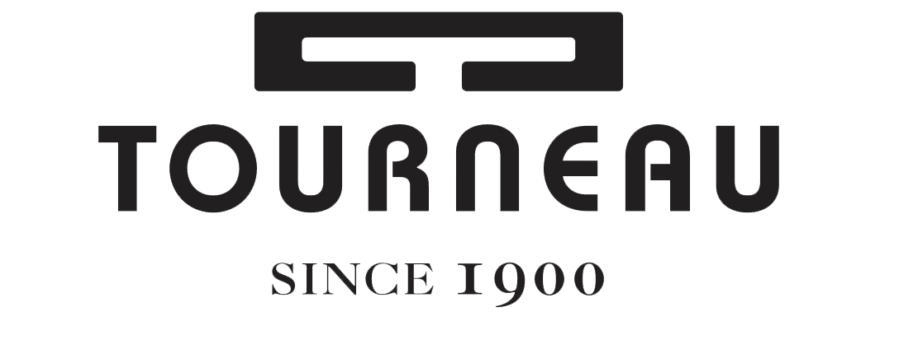

For the Spring and Fall of 2017 I was enrolled in the First Year Innovation and Research Experience as part of the Autonomous Unmanned Systems group. The FIRE program allows undergraduates to get hands on experience with research and complete their own novel research project. I worked on a project involving the autonomous detection of suspicious objects in a highly trafficked area as a counter-terrorist measure. The project included using Python and OpenCV to recognize objects and using Processing to create a simulation environment for emulating a crowded train station. In the Spring of 2018, I was a Peer Mentor for the stream, assisting the new students with their projects, as well as continuing to develop my own. The full paper that my group and I wrote can be found here.
I'm Sam, a second-year Computer Engineering Major at the University of Maryland, College Park.
My main areas of study are Robotics and Computer Vision. Outside the classroom I enjoy editing videos that I record with my drone.I'm currently seeking an internship for the Summer of 2019.

Coder Kids is an organization dedicated to teaching children about Computer Science at after school programs and at the studio in Mclean Virginia. We offer courses in Scratch, Web Development, Java, Swift, Python, and many more languages and environments. I used to work at the studio, where I helped children progress through their courses, set SMART goals, and build their own projects. Now, I work with the product development team creating new courses for the kids to learn.
For the Spring and Fall of 2017 I was enrolled in the First Year Innovation and Research Experience as part of the Autonomous Unmanned Systems group. The FIRE program allows undergraduates to get hands on experience with research and complete their own novel research project. I worked on a project involving the autonomous detection of suspicious objects in a highly trafficked area as a counter-terrorist measure. The project included using Python and OpenCV to recognize objects and using Processing to create a simulation environment for emulating a crowded train station. In the Spring of 2018, I was a Peer Mentor for the stream, assisting the new students with their projects, as well as continuing to develop my own. The full paper that my group and I wrote can be found here.
Over the summer of 2017 I worked at Tourneau, the country's leading luxury watch retailer, in their Information Technology Department. I used Chef to setup a configuration management system used to deploy IT professional workstations, created a short film for their national sales meeting in Adobe Premiere, and presented my ideas to panels of executives. Tourneau helped me learn what it takes to work in a professional environment and how to collaborate in cross-departmental teams.
